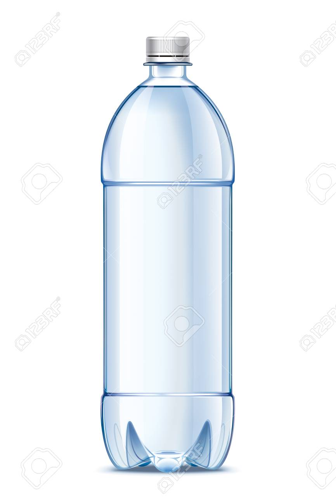
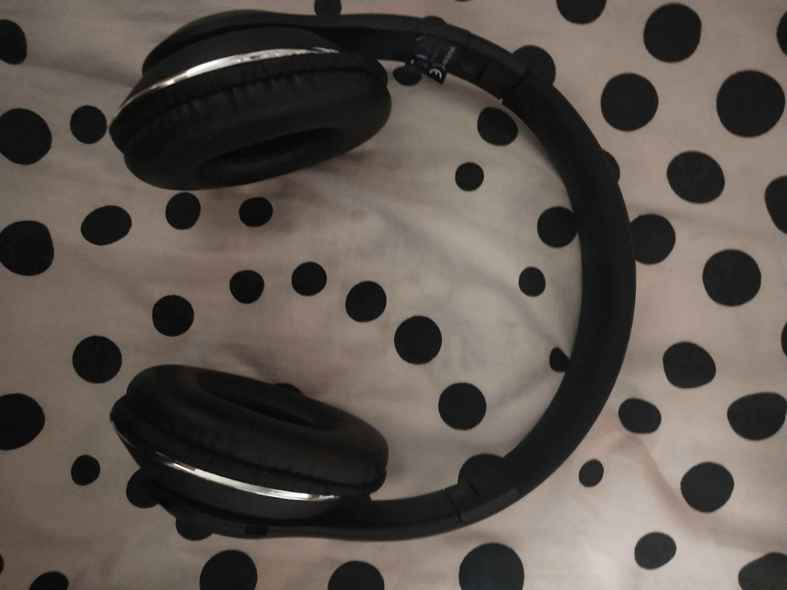
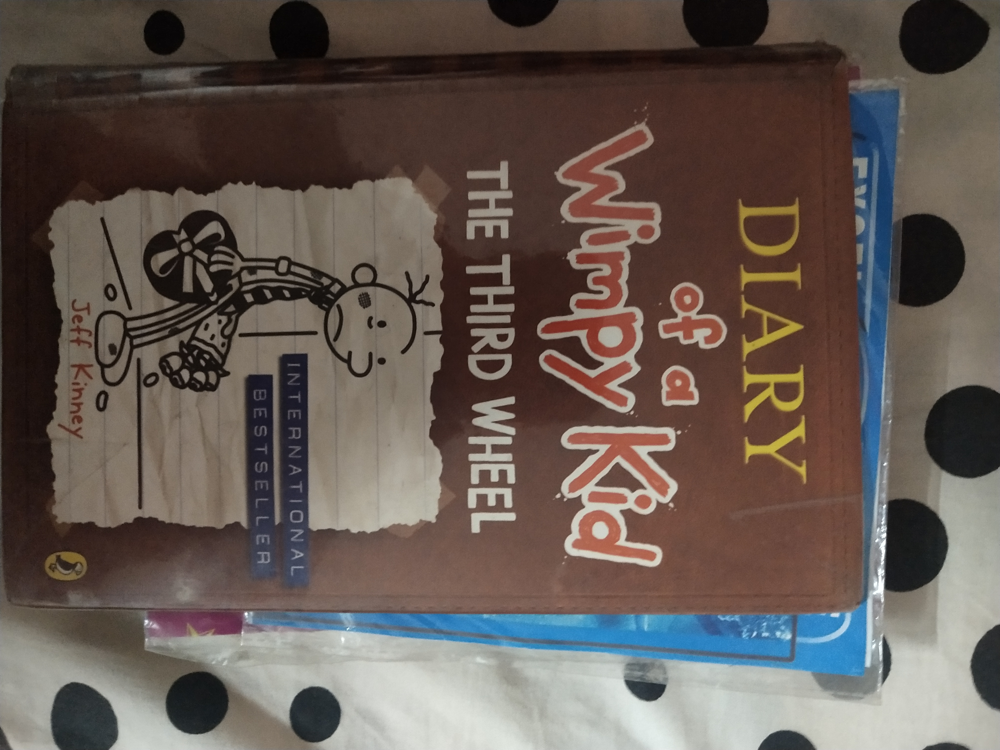
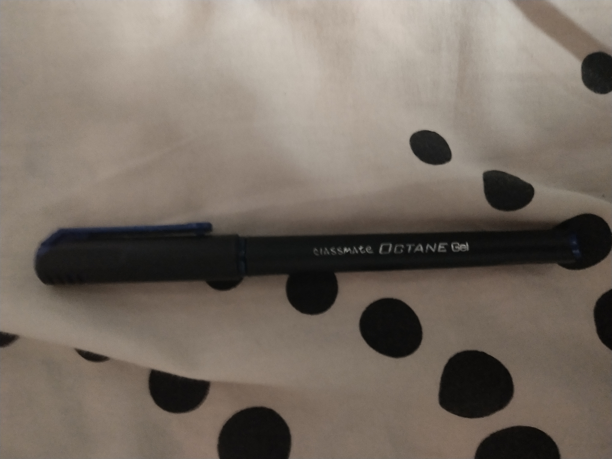
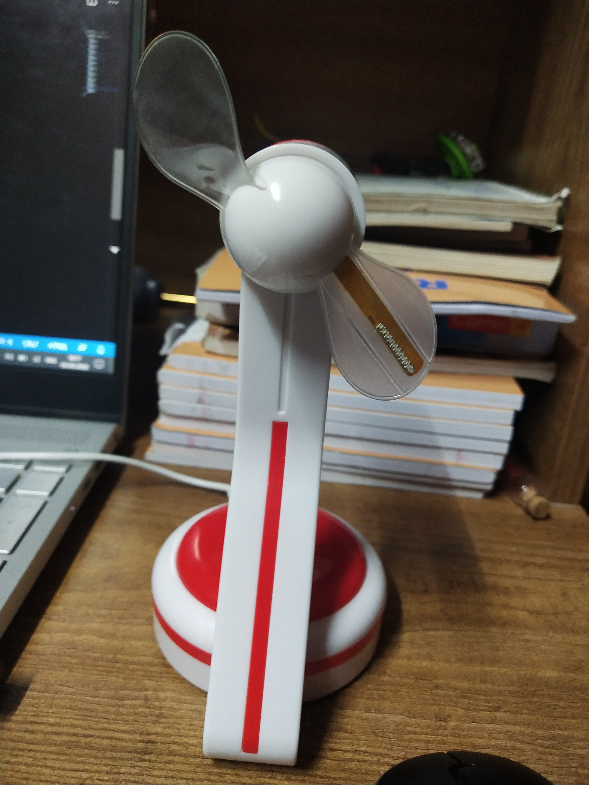
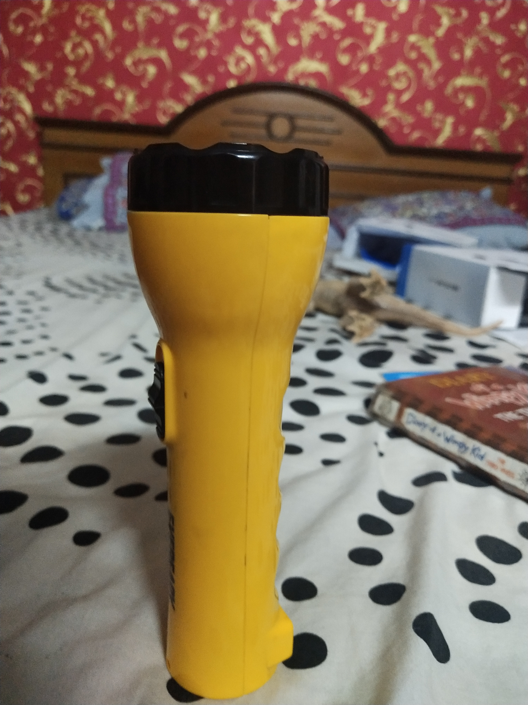
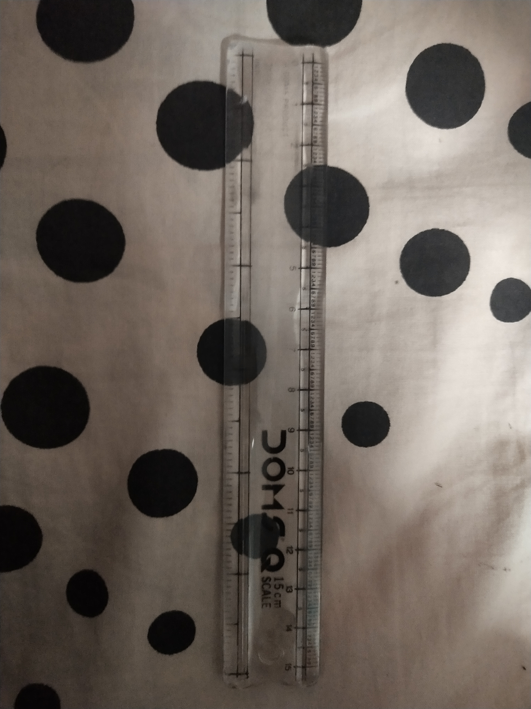
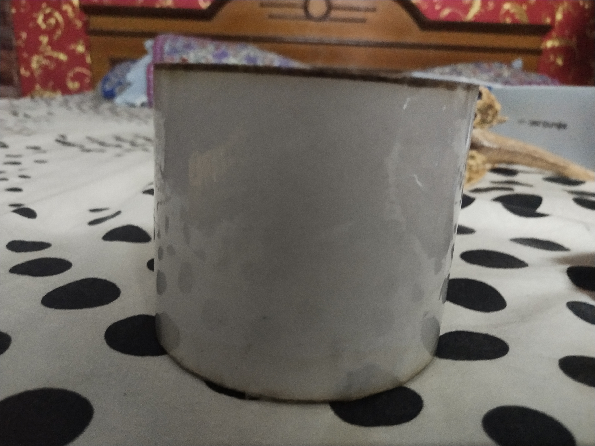
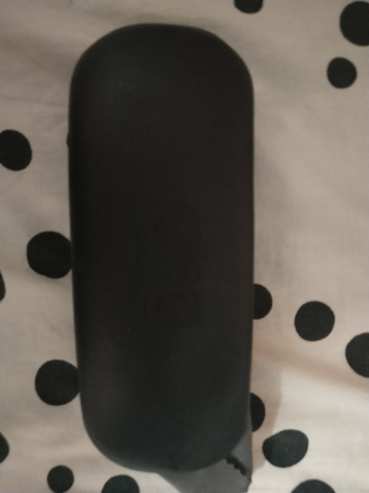

CASE STUDY

Wolfram output:
water bottleMobileNet output:
water bottleBoth are equal in this one

Wolfram output:
rivetMobileNet output:
watchMobileNet is more accurate

Wolfram output:
sprocketMobileNet output:
headphonemobileNet is more accurate

Wolfram output:
electric batteryMobileNet output:
bookMobileNet is more accurate

Wolfram output:
penMobileNet output:
spearmobile
Wolfram is more accurate

Wolfram output:
fan bladeMobileNet output:
windmillWolfram is more accurate

Wolfram output:
torchMobileNet output:
wallWolfram is more accurate

Wolfram output:
rivetMobileNet output:
rulerMobileNet is more accurate

Wolfram output:
baking sheetMobileNet output:
cylindernone of them got it correct but cylinder is a more appropiate ans

Wolfram output:
accerlatorMobileNet output:
soapWolframe answer is acceptable